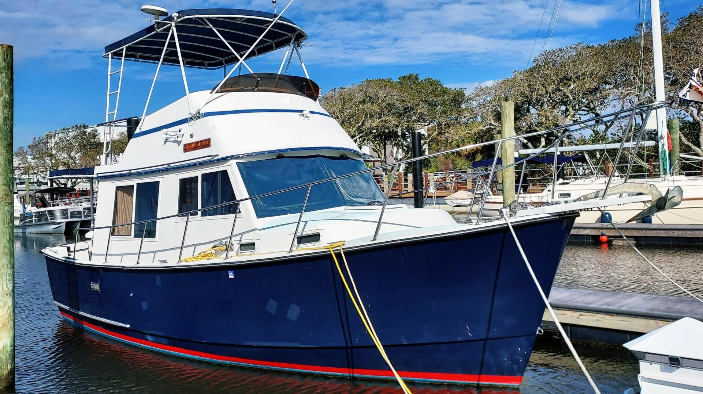

B-Atlas Boat Guide · PRAI-29-TR
Prairie 29 Coastal Cruiser Coastal Cruiser
1977–1981
The Prairie 29 Trawler is a compact American traditional trawler from the short-lived Prairie Boat Works line. The designs emphasize straightforward diesel cruising and practical accommodations; the 36 became particularly significant because its tooling continued as the Atlantic 37 Double Cabin after Prairie ceased operations.

- LOA
- 29 ft
- LWL
- 26 ft
- Beam
- 11.92 ft
- Draft
- 3 ft
- Hull behaviour
- Displacement
- Fuel
- Diesel
- Propulsion
- Shaft
- Engine configuration
- Single Inboard
- Boat family
- Trawler
- Construction
- Fiberglass
Best for
- Budget-conscious buyers seeking an uncommon traditional trawler
- Owners comfortable researching and maintaining low-volume older boats
- Slow inland and coastal cruising
Trade-offs
- Low production and age make documentation and replacement trim less straightforward
- Surviving boats are highly condition-dependent
- Traditional low-speed mission limits performance expectations
Known concerns
- No model-specific concern has been promoted to B-Atlas’s evidence threshold. This does not mean the model has no age-, condition- or hull-specific risks.
Inspection focus
- Verify model identity, year and build documentation carefully
- Inspect decks, windows and superstructure for moisture and prior repairs
- Inspect fuel/water tanks, wiring, exhaust and cooling systems
- Inspect shafts, rudders, keel and steering
- Review owner modifications due to the boats’ age and low-volume history
Continue researching
Related boat models
Prairie 36 Coastal Cruiser Double Cabin
36.58 ft · Semi-Displacement
Willard Vega 30 Voyager Raised Pilothouse
30 ft · Displacement
Cheoy Lee 28 Sedan Trawler Sedan
27.92 ft · Semi-Displacement
Camano 28/31 Gnome
31 ft · Semi-Displacement
Camano 28/31 Troll
31 ft · Semi-Displacement
Helmsman 31 Sedan Sedan
31 ft · Semi-Displacement
About this record
B-Atlas preserves uncertainty: missing information remains unknown rather than being treated as a negative. Specifications and guidance describe the model record; individual boats can differ by year, equipment, refit and condition.